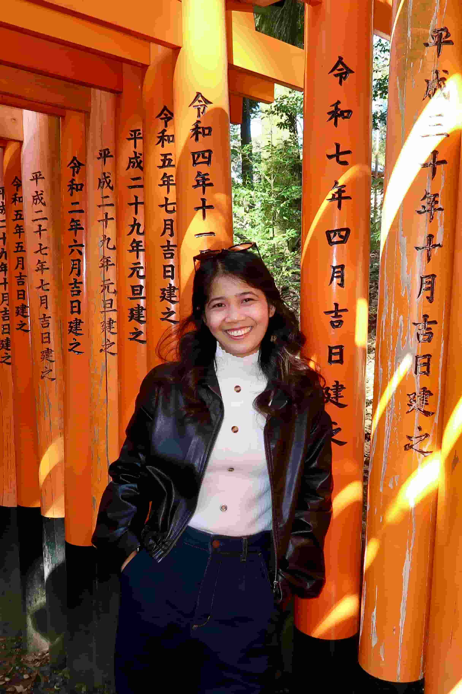

Wenndey Mae Ubatay
About Me
My name is Wenndey Mae Ubatay, but you can call me Wenndey or Mae. I live in the Philippines and am currently pursuing a degree in Software Development. I am the eldest of three siblings.
I served a mission in the Korea Busan Mission, which was one of the most meaningful and life-changing experiences of my life. It helped me grow spiritually, build lasting friendships, and develop a love for learning about different cultures.

My Interests
One of my biggest passions is traveling. Over the past two years, I've had the opportunity to visit seven countries, and each trip has been an amazing experience. I enjoy exploring new places, trying different cuisines, learning about local traditions, and meeting people from different backgrounds. In my free time, I enjoy watching Korean dramas, listening to music, taking photos during my travels, and spending quality time with my family and friends. Recently, I've also been enjoying watching Chinese dramas, and they've quickly become one of my favorite ways to relax. I'm also excited to continue improving my programming skills and learning more about web development throughout this course.